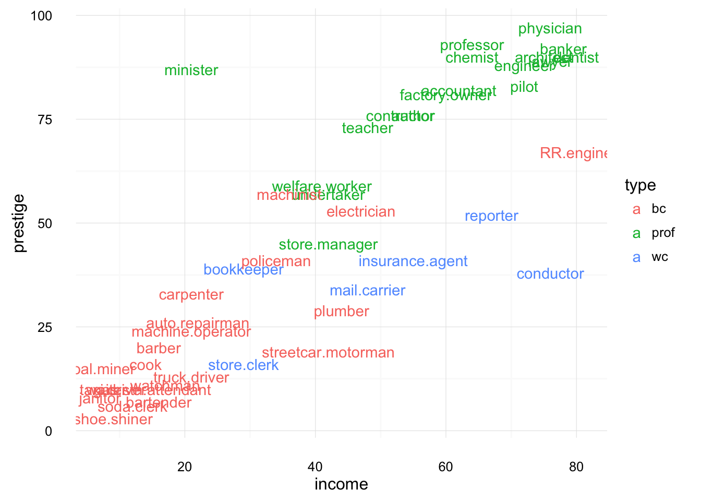

Duncan Prestige Regression Example
Jeffrey B. Arnold
04/21/2015
This example will use Duncan’s Occpational Prestige Data, which has data on prestige and other characteristics of 45 U.S. occupations in 1950. See the help page for more info. This data is contained in the car package.
library("car")
data("Duncan")?DuncanWe’ll also use a few other packages, which we should load now.
library("ggplot2")
library("dplyr")
library("broom")The Duncan data frame contains the names of the profession as row names. This is something that is generally discouraged in modern R, so we will make a new column named occupation.
This uses the $ to assign a value to a column in R. We’ve been using dplyr so much that we haven’t had to do this, but it can be easier at times. This could have also been done using the dplyr function add_rownames.
Duncan <- add_rownames(Duncan, var = "occupation")Without dplyr we would have used
# Duncan$occupation <- rownames(Duncan)Scatterplots
Before starting let’s create a couple of scatterplots of the data. First, prestige vs. income, labeling the points, and coloring them by type.
ggplot(Duncan, aes(x = income, y = prestige, colour = type,
label = occupation)) +
geom_text() +
theme_minimal()  Now, prestige vs. income, coloring the points by education level:
ggplot(Duncan, aes(x = income, y = prestige, colour = education)) +
geom_point() +
theme_minimal() Run a regression of prestige on income and education
mod1 <- lm(prestige ~ income + education, data = Duncan)
mod1_summary <- summary(mod1)
mod1_summary##
## Call:
## lm(formula = prestige ~ income + education, data = Duncan)
##
## Residuals:
## Min 1Q Median 3Q Max
## -29.538 -6.417 0.655 6.605 34.641
##
## Coefficients:
## Estimate Std. Error t value Pr(>|t|)
## (Intercept) -6.06466 4.27194 -1.420 0.163
## income 0.59873 0.11967 5.003 1.05e-05 ***
## education 0.54583 0.09825 5.555 1.73e-06 ***
## ---
## Signif. codes: 0 '***' 0.001 '**' 0.01 '*' 0.05 '.' 0.1 ' ' 1
##
## Residual standard error: 13.37 on 42 degrees of freedom
## Multiple R-squared: 0.8282, Adjusted R-squared: 0.82
## F-statistic: 101.2 on 2 and 42 DF, p-value: < 2.2e-16This extracts the coefficient estimates \(\hat{\beta}\),
beta <- coef(mod1)This extracts the variance covariance matrix of the coefficient estimatates \(V(\hat{\beta})\).
beta_vc <- vcov(mod1)Standard errors of the coefficients are \(se(\hat{\beta}) = \sqrt{diag(V(\hat{\beta}))}\),
beta_se <- sqrt(diag(beta_vc))The \(t\)-statistic of the hypothesis test \(\beta = 0\) is \(\frac{\hat{\beta}}{se(\hat{\beta})}\),
tstat <- beta / beta_seAnd the \(p\)-value of the two-sided hypothesis test \(H_0: \beta = 0\), \(H_a: \beta \neq 0\) is,
pval <- 2 * (1 - pt(tstat, mod1$df.residual))This uses the qt function to calculate probabilities from the \(t\)-distribution.
The degrees of freedom \(n - k - 1\)
mod1$df.residual## [1] 42The coefficients, \(\hat{\beta}\):
coef(mod1)## (Intercept) income education
## -6.0646629 0.5987328 0.5458339The coefficients can also be extracted directly from the element in the lm object
mod1$coefficients## (Intercept) income education
## -6.0646629 0.5987328 0.5458339The fitted values, \(\hat{y}\) (of the data used for fitting the regression).
head(fitted(mod1))## 1 2 3 4 5 6
## 77.99849 78.52748 89.05702 75.99069 79.19595 52.35877head(mod1$fitted)## 1 2 3 4 5 6
## 77.99849 78.52748 89.05702 75.99069 79.19595 52.35877The residuals, \(\hat{epsilon} = y - \hat{y}\):
head(residuals(mod1))## 1 2 3 4 5
## 4.001511779 4.472522658 0.942981643 0.009305892 10.804046136
## 6
## 34.641225280head(mod1$residuals)## 1 2 3 4 5
## 4.001511779 4.472522658 0.942981643 0.009305892 10.804046136
## 6
## 34.641225280You can check that the residuals are \(y - \hat{y}\),
head(Duncan$prestige - fitted(mod1))## 1 2 3 4 5
## 4.001511779 4.472522658 0.942981643 0.009305892 10.804046136
## 6
## 34.641225280To get the data used in the regression back from the regression,
head(model.frame(mod1))## prestige income education
## 1 82 62 86
## 2 83 72 76
## 3 90 75 92
## 4 76 55 90
## 5 90 64 86
## 6 87 21 84To get the \(y\) values (model or design matrix) used in the regression,
head(model.response(model.frame(mod1)))## 1 2 3 4 5 6
## 82 83 90 76 90 87Note that if you have missing values in the regression, R has sophisticated but subtle ways of handling them, especially in predict. See the help for na.omit and follow links about lm.
The anova function returns a table with the total, model, and residual sum of squares.
anova(mod1)## Analysis of Variance Table
##
## Response: prestige
## Df Sum Sq Mean Sq F value Pr(>F)
## income 1 30664.8 30664.8 171.570 < 2.2e-16 ***
## education 1 5516.1 5516.1 30.863 1.727e-06 ***
## Residuals 42 7506.7 178.7
## ---
## Signif. codes: 0 '***' 0.001 '**' 0.01 '*' 0.05 '.' 0.1 ' ' 1Result post-processing with broom
Broom is a relatively new package that works well with the dplyr and %>% workflow by converting the results of common models into data frames that can be processed more easily than the default objects R returns.
broom has three main functions, all of which return data frames (not lists, numeric vectors, or other types of object). glance returns a data frame with a single row summary of the model:
glance(mod1)## r.squared adj.r.squared sigma statistic p.value df logLik
## 1 0.8281734 0.8199912 13.36903 101.2162 8.647636e-17 3 -178.9822
## AIC BIC deviance df.residual
## 1 365.9645 373.1911 7506.699 42tidy returns a data frame with a row for each coefficient estimate:
tidy(mod1)## term estimate std.error statistic p.value
## 1 (Intercept) -6.0646629 4.27194117 -1.419650 1.630896e-01
## 2 income 0.5987328 0.11966735 5.003310 1.053184e-05
## 3 education 0.5458339 0.09825264 5.555412 1.727192e-06augment returns the original data frame used in the model with additional columns for fitted values, the standard errors of those fitted values, residuals, etc.
head(augment(mod1))## prestige income education .fitted .se.fit .resid .hat
## 1 82 62 86 77.99849 3.017029 4.001511779 0.05092832
## 2 83 72 76 78.52748 3.200759 4.472522658 0.05732001
## 3 90 75 92 89.05702 3.527929 0.942981643 0.06963699
## 4 76 55 90 75.99069 3.405677 0.009305892 0.06489441
## 5 90 64 86 79.19595 3.028764 10.804046136 0.05132528
## 6 87 21 84 52.35877 5.561551 34.641225280 0.17305816
## .sigma .cooksd .std.resid
## 1 13.51587 1.688452e-03 0.3072378711
## 2 13.51194 2.406367e-03 0.3445645225
## 3 13.53022 1.334199e-04 0.0731269019
## 4 13.53108 1.198619e-08 0.0007198265
## 5 13.41973 1.241505e-02 0.8297130469
## 6 12.15304 5.663797e-01 2.8494163845Coefficient Plots
Also known as airplane plots or ropeladder plots:
ggplot(tidy(mod1) %>% filter(term != "(Intercept)"),
aes(x = term, y = estimate,
ymin = estimate - 2 * std.error,
ymax = estimate + 2 * std.error)) +
geom_pointrange() +
coord_flip()This could also be done with the coefplot function from the coefplot package:
library("coefplot")
coefplot(mod1)or to drop the intercept
coefplot(mod1, coefficients = c("income", "education")) Since internally coefplot uses ggplot2, you could also edit the object it returns.
Creating regression tables
Several packages (stargazer, texreg, apsrtable) are useful for creating publication type regression tables. stargazer and texreg are the most complete package. Both allow output to either LaTeX or HTML tables for many types of statistical models. We’ll use stargazer here:
library("stargazer")##
## Please cite as:## Hlavac, Marek (2015). stargazer: Well-Formatted Regression and Summary Statistics Tables.## R package version 5.2. http://CRAN.R-project.org/package=stargazerstargazer(mod1, type = "text")##
## ===============================================
## Dependent variable:
## ---------------------------
## prestige
## -----------------------------------------------
## income 0.599***
## (0.120)
##
## education 0.546***
## (0.098)
##
## Constant -6.065
## (4.272)
##
## -----------------------------------------------
## Observations 45
## R2 0.828
## Adjusted R2 0.820
## Residual Std. Error 13.369 (df = 42)
## F Statistic 101.216*** (df = 2; 42)
## ===============================================
## Note: *p<0.1; **p<0.05; ***p<0.01Now render that as html instead,
stargazer(mod1, type = "html")| Dependent variable: | |
| prestige | |
| income | 0.599*** |
| (0.120) | |
| education | 0.546*** |
| (0.098) | |
| Constant | -6.065 |
| (4.272) | |
| Observations | 45 |
| R2 | 0.828 |
| Adjusted R2 | 0.820 |
| Residual Std. Error | 13.369 (df = 42) |
| F Statistic | 101.216*** (df = 2; 42) |
| Note: | p<0.1; p<0.05; p<0.01 |
Look at the source .Rmd file for this document; the chunk above used results = "asis" to print and render the HTML rather than R output.
This usefulness of this function is apparent when multiple regressions are plotted:
mod3 <- lm(prestige ~ income, data = Duncan)
mod4 <- lm(prestige ~ income * type + education * type, data = Duncan)
stargazer(mod1, mod3, mod4, type = "html")| Dependent variable: | |||
| prestige | |||
| (1) | (2) | (3) | |
| income | 0.599*** | 1.080*** | 0.783*** |
| (0.120) | (0.107) | (0.131) | |
| typeprof | 32.008** | ||
| (14.109) | |||
| typewc | -7.043 | ||
| (20.638) | |||
| education | 0.546*** | 0.320 | |
| (0.098) | (0.280) | ||
| income:typeprof | -0.369* | ||
| (0.204) | |||
| income:typewc | -0.360 | ||
| (0.260) | |||
| typeprof:education | 0.019 | ||
| (0.318) | |||
| typewc:education | 0.107 | ||
| (0.362) | |||
| Constant | -6.065 | 2.457 | -3.951 |
| (4.272) | (5.190) | (6.794) | |
| Observations | 45 | 45 | 45 |
| R2 | 0.828 | 0.702 | 0.923 |
| Adjusted R2 | 0.820 | 0.695 | 0.906 |
| Residual Std. Error | 13.369 (df = 42) | 17.403 (df = 43) | 9.647 (df = 36) |
| F Statistic | 101.216*** (df = 2; 42) | 101.252*** (df = 1; 43) | 54.174*** (df = 8; 36) |
| Note: | p<0.1; p<0.05; p<0.01 | ||
Addtionally, the packages xtable and pander are not a specific to the problem of creating regression tables, but since they are more genral purpose, they are good for creating LaTeX / HTML / Markdown tables for a variety of R objects.
Predicted values
You could calculate predicted values manually. For example, the predicted prestige from mod1 of an occupation with an income of 41.9 and an education of 52.5 is
coef(mod1)["(Intercept)"] + coef(mod1)["income"] * 41.9 + coef(mod1)["education"] * 52.5## (Intercept)
## 47.67852or
c(1, 41.9, 52.5) %*% coef(mod1)## [,1]
## [1,] 47.67852However, it is much easier to calculate this with the predict function. If predict is used without a newdata argument it acts similarly to fitted and returns the predicted values for the data used to estimate the model (although it will include predicted values for missing data):
head(predict(mod1))## 1 2 3 4 5 6
## 77.99849 78.52748 89.05702 75.99069 79.19595 52.35877But, if the newdata argument is used, then predict can be used to find the predicted values for new data points. To calculate the predicted value of the example above:
predict(mod1, newdata = data.frame(education = 52.5, income = 41.9))## 1
## 47.67852You can find the confidence intervals by specifying interval = "confidence".
yhat <- predict(mod1, interval = "confidence")A note on help for predict: predict works with many different types of analyses and object. You need to go to ?predict.lm to get help for predict as it relates to lm.
To plot, convert to a data_frame
yhat_df <- as.data.frame(yhat) %>% add_rownames(var = "occupation")Now it is easy to plot in ggplot2
ggplot() +
geom_point(data = Duncan, aes(x = income, y = prestige))
Now do it with hypothetical values. All values of income observed in the data, but education at its mean.
duncan_mean_education <-
data.frame(education = mean(Duncan$education),
income = seq(min(Duncan$income), max(Duncan$income),
length.out = 50))
mod1_predicted <- as.data.frame(predict(mod1, newdata = duncan_mean_education,
interval = "confidence", conf.level = 0.95))
# augment(mod1, newdata = duncan_mean_education) %>%
# mutate(lower = .fitted + qt(0.025, mod1$df.residual) * .se.fit,
# upper = .fitted + qt(0.975, mod1$df.residual) * .se.fit)To plot this, we’ll need to combine it back with the original data.
mod1_predicted <- cbind(duncan_mean_education, mod1_predicted)Now, let’s plot the predicted values and the 95% confidence interval of predicted values as income changes. Additionally, we’ll plot the original values.
ggplot() +
geom_line(data = mod1_predicted, mapping = aes(x = income, y = fit)) +
geom_ribbon(data = mod1_predicted, mapping = aes(x = income, ymin = lwr, ymax = upr),
alpha = 0.2) +
geom_point(data = Duncan, mapping = aes(x = income, y = prestige)) +
ylab("prestige") Note that we use different datasets in each geom, and do not use any values in ggplot. The ggplot function can provide default mappings in aes and a default dataset. But if you are using multiple datasets, it can be safter and less buggy to specify a data and mapping argument for each geom layer.
For more interesting predicted value plots, let’s run a regression with a categorical variable.
mod2 <- lm(prestige ~ income + education + type, data = Duncan)
mod2##
## Call:
## lm(formula = prestige ~ income + education + type, data = Duncan)
##
## Coefficients:
## (Intercept) income education typeprof typewc
## -0.1850 0.5975 0.3453 16.6575 -14.6611Now, let’s predict values for each type of occupation for all values of income, holding education at its mean value. First, we need to create the data that will be used for the predicted values. This can be made easier with the function expand.grid, which returns a data frame with all combinations of its arguments. For example,
expand.grid(a = 1:3, b = c("a", "b"))## a b
## 1 1 a
## 2 2 a
## 3 3 a
## 4 1 b
## 5 2 b
## 6 3 bWith that information, let’s create data frame with the values needed for prediction
newdata_types_inc <-
expand.grid(type = unique(Duncan$type),
income = seq(min(Duncan$income), max(Duncan$income),
length.out = 5),
education = mean(Duncan$education))
# # Another method
# newdata_types_inc <-
# Duncan %>% {
# expand.grid(type = unique(.$type),
# income = seq(min(.$income), max(.$income),
# length.out = 5),
# education = mean(.$education))
# }Then, create predicted values and confidence intervals with either predict or augment.
predicted_mod2 <-
augment(mod2, newdata = newdata_types_inc) %>%
mutate(lower = .fitted + qt(0.025, mod2$df.residual) * .se.fit,
upper = .fitted + qt(0.975, mod2$df.residual) * .se.fit)And then plot it,
ggplot(predicted_mod2, aes(x = income, y = .fitted,
ymin = lower, ymax = upper)) +
geom_line(mapping = aes(colour = type)) +
geom_ribbon(mapping = aes(fill = type), alpha = 0.2) +
ylab("prestige") +
ggtitle("Predicted values of prestige by type, holding education constant")